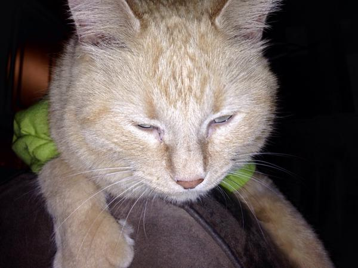
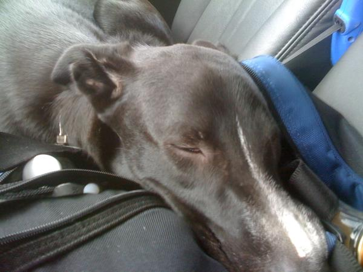
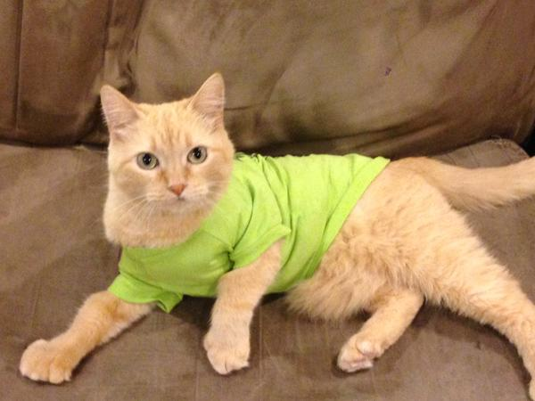
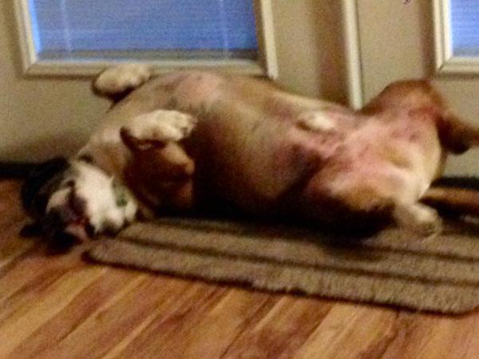

The News Feed!
LIVE Twitter Feed!
Tweets by @QuigleyZooPopular Tweets!

"Why can't today be Friday? #QuigleyCrazyZoo #QuigleyZoo #CrazyCrush #cat #CatsOfTwitter"

"Jack is sleeping on the job... #QuigleyCrazyZoo #QuigleyZoo #Jack #dogsoftwitter #dog #MondayMotivation"

"Who knew putting a shirt on Crush would calm him? #QuigleyCrazyZoo #QuigleyZoo #CrazyCrush #cat #CatsOfTwitter"

"I just want to be painted. #dogs #QuigleyCrazyZoo #Roscoethetank"